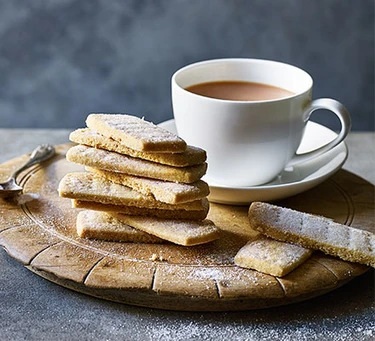

Shortbread Biscuits

Delicious crumbly shortbread
Make these moreish shortbread biscuits using just three ingredients. They're wonderfully crumbly and go perfectly with a cup of tea for a mid-morning treat.
Ingredients
- 150g plain flour
- 100g butter
- 50g caster sugar
Steps
- Heat the oven 170C/150C fan/gas 3. Put the flour, butter and sugar into a mixing bowl. Use your hands to combine the ingredients until the mixture looks like breadcrumbs, then squeeze until it comes together as a dough.
- On a lightly floured surface, use a rolling pin to roll out the dough to ½ cm thick. Cut the dough into fingers and place on a lined baking tray. Use a fork to create imprints, then sprinkle with the remaining caster sugar.
- Chill the dough in the fridge for 20 mins, then bake for 15-20 mins until golden brown. Remove the shortbread fingers from the oven and leave to cool on the tray for 10 mins.Chill the dough in the fridge for 20 mins, then bake for 15-20 mins until golden brown. Remove the shortbread fingers from the oven and leave to cool on the tray for 10 mins.